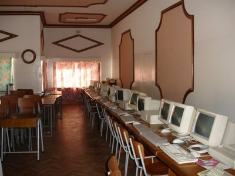

COMPUTER CENTER
Building and Facilities
Part of the building used for the Creche and Day Centre was vacated in order to make way for the establishment of the Computer Centre, in 2002.

Courses
Computer literacy courses for the boys were commenced during in 2001. Subsequently early in 2002 part of the Creche building was designated for the establishment of a full-fledged Computer Centre. This Centre now provides broad-based courses for all students